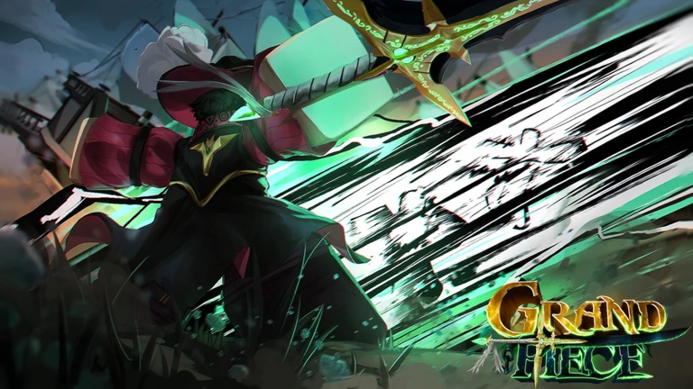
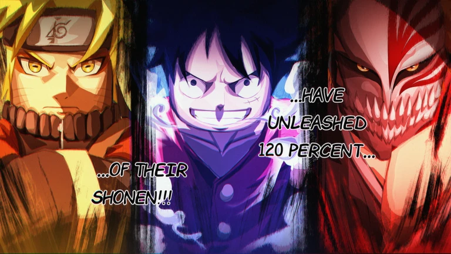

.webp)
.webp)

.webp)



Many people do not take Roblox games seriously for a number of reasons. One main reason for this is that people tend to believe that Roblox is a game for younger people. Another reason for this is that anyone can make a game and publish it on Roblox. Due to this reason, many people tend to believe that Roblox games are not professional enough compared to other video games. The graphics and blocky style of the Roblox game can also be a reason why people do not take these games seriously. The reason for this is that these graphics and style make people believe that these games are not as advanced as other video games. However, this is not true since many Roblox games are well-designed and created by very talented developers.
I think people should try the game deepwoken and the game it ressembles the most is elder scrolls series. Its not a copy of elder scrolls but if i were to compare it to anygame thats the closest game i could think off. Deepwoken has pve and pvp and deep lore behind the game although its not for everyone because the game is diffcult, its a beautiful game. Another game i think everyome should try is the mimic because its a great horror game that displays the capabilites of what roblox devlopers can do.